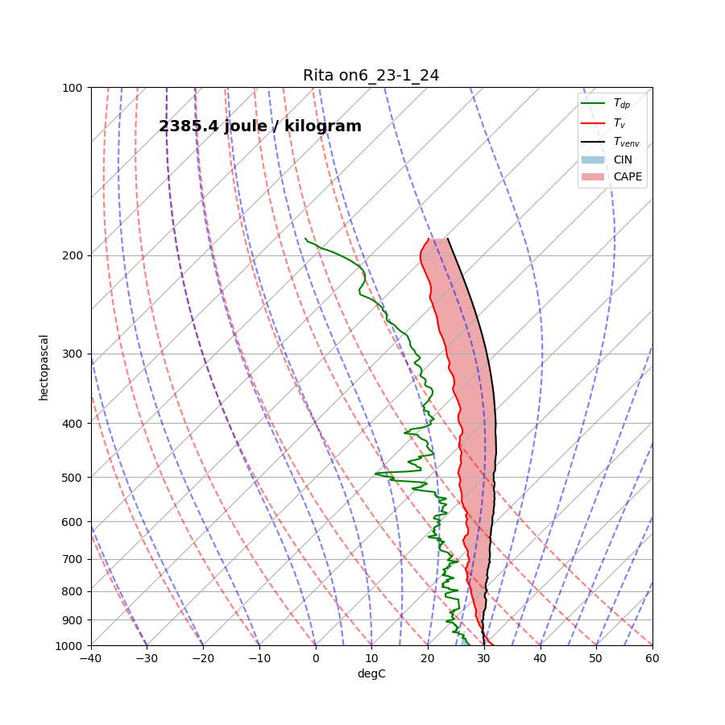
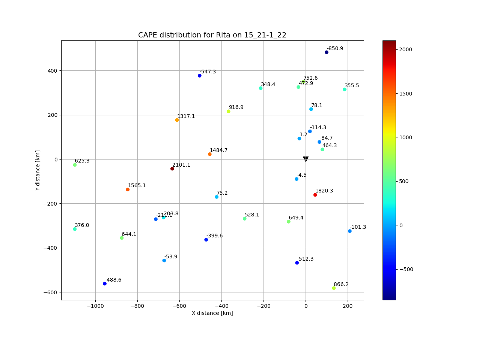

6. Plot CAPE distributions¶
Convective Available Potential Energy (CAPE) is a thermodynamic metric of instability and therefore it is related to potential convection or weather events. While their use in TC studies is limited, providing a distribution plot of CAPE and CIN is considered a good visualization aid to understand how and where instabilities occur in a TC.
This example will be based on three functions: toolbox.cape_cin(), toolbox.parcel_profile() and toolbox._find_append_zero_crossings() which were originally part of the Metpy module.
The specific formulas to obtain CAPE and CIN are documented in the functions themselves.
This example has similarities with the main processing but is different in essence since they have different objectives.
As such, this code is also related to several functions in the toolbox, mainly:
toolbox.findproperties(), toolbox.getsamplingperiods(), etc.
Note
This example is not documented-inline but it is rather explained through the Sphinx-Gallery pages, i.e., through this text floating around on top of the text-block. This allows to have short but explained example files.
The first section of this example includes the preamble, which is highly documented in _sphx_glr_auto_examples_plot_drift.py() and processing().
In this case, import of functions from the toolbox is done through the use of *, a syntax that implies the import of all functions from toolbox.
import numpy as np
import pandas as pd
import matplotlib.pyplot as plt
import datetime
import os
from metpy.calc import saturation_mixing_ratio
from metpy.plots import add_metpy_logo, SkewT
import metpy.calc as mpcalc
from metpy.units import units,concatenate
from toolbox import *
The example is written as a function with three arguments:
- filelist: list of dropsonde files.
- track: dictionary object with track output from flightdata.
- storm: str Name of storm.
The next code-block defines the function and uses the same procedure as processing to read the data, select Intense Observation Periods (IOPs) and discriminate between files in the sampling period.
#Sort filelist.
filelist=np.sort(filelist)
# Get sampling periods (this will be a dictionary). See the toolbox
print('Retrieving sampling periods')
sampleperiods=getsamplingperiods(filelist,3.)
# Iterate over all sampling periods.
for sampindex,periodskey in enumerate(sampleperiods):
#Allocate starting (stdt) and ending date (endt). Remeber dt is the convetional short-name for date.
stdt=periodskey
endt=sampleperiods[periodskey]
# Define sampling period string
period=str(stdt.hour)+'_'+str(stdt.day)+'-'+str(endt.hour)+'_'+str(endt.day)
print(period)
# possible user print
print(stdt,endt)
# Create new-empty lists.
lats=[]
lons=[]
xs=[]
ys=[]
capes=[]
# Remove outputfile
os.system('rm temp_axisym.txt')
print('start filelist loop')
# Iterate over all files.
for filename in filelist:
# Select end-name of file by inspecting filename string. Notice how filename can change how file is read.
if 'radazm' in filename.split('/')[-1] or 'eol' in filename.split('/')[-1]:
end='radazm'
else:
end='avp'
# Obtain properties of file, i.e., launch time and location into a dictionary (dicc).
dicc=findproperties(filename,end)
# Condition to see if current file is in sampling period.
# Notice how if structure is constructed, condition finds times outside of sampling period and
# if found outside the sampling period, continue to next file.
if dicc['Launch Time']<stdt or dicc['Launch Time'] > endt:
continue
The next block reads-in the file into a numpy array, as other scripts do. In this case, the block ends with a condition necessary to compute CAPE which is that the height of the sounding be over 3500 m. Other thresholds in pressure or height could be inserted in this block. Notice that all fields are imported from the selected column and, in place, are cleaned by functions from the toolbox.
nump=np.genfromtxt(filename,skip_header=head,skip_footer=foot)
temperature=clean1(nump[:,5])
pressure=clean1(nump[:,4])
Height=clean1(nump[:,13])
if np.nanmax(Height)<3500:
continue
If the sounding has big enough height values, then the rest of the necessary fields are read-in and cleaned.
Notice the use of cleanforcape() and the change in variable names at this stage to distinguish between original and new fields.
RelH=clean1(nump[:,7])
lon=clean1(nump[:,14])
lat=clean1(nump[:,15])
lon=clean1(lon)
lat=clean1(lat)
mlon=np.nanmean(lon)
mlat=np.nanmean(lat)
RH=RelH/100
T,P,rh,dz=cleanforcape(temperature,pressure,RH,Height)
The next is to set-up the arrays to be used by the Metpy=derived functions. In this case, the insertion of units and the flip of the arrays. npflip changes the order of the arrays. Typically soundings are reported from the ground up, however, dropsondes are reported from above to below. To adjust this and mantain consistency between all arrays, np.flip function is used. Also used the metpy module to assign units to fields.
T=np.flip(T,0)
rh=np.flip(rh,0)
p=np.flip(P,0)
dz=np.flip(dz,0)
p=p*units.hPa
T=T*units.celsius
After this, moisture metrics are calculated using metpy calc to first, obtain the mixing ratio, then the dewpoint temperature and finally obtain parcel profiles of temperature and virtual temperature. The last line of this block obtains cape and cin from the previous profiles of temperature and moisture.
mixing=rh*mpcalc.saturation_mixing_ratio(p,T)
epsilon=0.6219800858985514
Tv=mpcalc.virtual_temperature(T, mixing,
molecular_weight_ratio=epsilon)
dwpoint=mpcalc.dewpoint_rh(T, rh)
blh_indx=np.where(dz<500)
parcelprofile=mpcalc.parcel_profile(p,np.nanmean(T[blh_indx])*units.celsius,mpcalc.dewpoint_rh(np.nanmean(T[blh_indx])*units.celsius, np.nanmean(rh[blh_indx]))).to('degC')
Tv_parcelprofile=mpcalc.virtual_temperature(parcelprofile, mixing,
molecular_weight_ratio=epsilon)
cape,cin=cape_cin(p,Tv,dwpoint,Tv_parcelprofile,dz,T)
6.1. SkewT-log P plots.¶
If decided by the user, typical SkewT plots can be done with the aid of the metpy module for each of the soundings accepted by this example. plotskewT is used as the boolean variable to decide wether or not to this plots. This example will use the option True to produce these plots. Keep in mind that the main task of this example is to plot the distribution of CAPE values and not precisely to produce the sonde type plots.
As such, the next block produces the skewT plots and saves them in a specific folder created for the purpose of filling it with skewt plots. Notice the shade_cape functions are metpy functions and not exactly the ones used in our computations. The main purpose of this plot is to show typical behaviour of the sounding, the approximate CAPE and CIN and how moisture profiles influence thermodynamic profiles. The real estimation of CAPE, calculated above, is the one used for the distribution plot. The next block also contains metpy’s commands to make the plot stylish.
plotskewT=True
if plotskewT==True:
os.system('mkdir figs/skewt')
fig = plt.figure(figsize=(9, 9))
skew = SkewT(fig, rotation=45)
skew.ax.set_ylim(1000, 100)
skew.ax.set_xlim(-40, 60)
skew.plot(p, dwpoint, 'g')
skew.plot(p, Tv, 'r')
plt.text(-140,120,str(np.around(cape,2)))
# Plot the data using normal plotting functions, in this case using
# log scaling in Y, as dictated by the typical meteorological plot
skew.plot(p,Tv_parcelprofile,'k')
skew.shade_cin(p, T, parcelprofile)
skew.shade_cape(p, Tv, Tv_parcelprofile)
skew.plot_dry_adiabats()
skew.plot_moist_adiabats()
plt.title(storm + ' on' + dicc['Launch Time'],fontsize=14)
plt.savefig('figs/skewt/'+storm+dicc['Launch Time']+'.png')
#plt.show()
6.2. CAPE Distribution¶
After having done this, the next section will create and plot the scatter of observations around the centre of the storm. In other words, plot a point where each dropsonde is located, however, the colour of the marker will describe the CAPE value using a jet colormap.
Note
The following block has different identation than the operational example since the control if should be idented to the right since it is part of the main for loop. Identation is ignored in the block for visual purposes.
r,theta=cart_to_cylindr(mlon,mlat,track,dicc['Launch Time'])
if not(np.isnan(r)) and not(np.isnan(theta)) and not(np.isnan(cape.magnitude)):
xs.append(r*np.cos(theta))
ys.append(r*np.sin(theta))
capes.append(cape.magnitude)
cins.append(cin)
fig = plt.figure(figsize=(13, 9))
plt.scatter(xs,ys,c=np.asarray(capes),cmap='jet')
for i,xi in enumerate(xs):
plt.text(xi,ys[i]+10,str(np.around(capes[i],1)))
plt.colorbar(label=r"$J/kg$')
plt.scatter(0,0,marker='v',s=100,color='black')
plt.grid()
plt.xlabel('X distance [km]')
plt.ylabel('Y distance [km]')
plt.title('CAPE distribution for '+storm+' on '+period,fontsize=14)
plt.savefig('figs/cape'+storm+period+'.png')
6.3. Expected skewTs for Rita in September 21, 2005 :¶
6.4. Expected CAPE distribution for Rita in September 21, 2005 :¶
This script can be used by both inserting in the interface the name of storm and selecting the option to do the